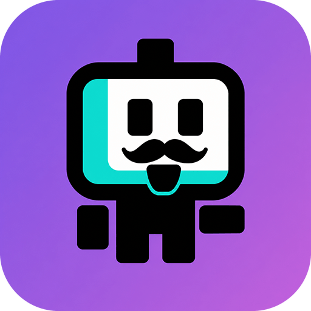

NEEDS YOUR INPUT now
Review database migration
dev-server / projects/api
Continue the conversation in the app
PinkCollab.PINKCOLLAB FOR OMP · OPEN SOURCE
Start fresh tasks in your workspaces.
Follow, steer, and answer them from your phone.
Choose a directory and send the first prompt. PinkCollab launches a real Oh My Pi process on your computer, then keeps its full lifecycle within reach.
dev-server / projects/api
Continue the conversation in the appA decision from you keeps work moving.
One phone.
Every workspace.
A LITTLE DISTANCE. NO DISCONNECT.
The useful parts of agent control,
made for the screen in your hand.
See what needs your attention, what’s running, and what’s recently finished across your computers and servers.
Follow streaming replies and tool details. Send a new prompt, steer ongoing work, or answer when your agent asks.
Browse allowed workspaces, pick a project, and launch a fresh OMP task with the working directory and first prompt already set.
Your machines stay yours. OMP runs on your hosts. Model provider credentials stay there, too. Pair devices with a single-use QR code and revoke access when you need to.
Deployment guidePOWERED BY
Oh My Pi (OMP) is a coding agent for the terminal: subagents, plan mode, LSP and DAP, hindsight memory, hashline edits, and time-traveling rules, on a native Rust engine. PinkCollab adds no agent of its own — it drives OMP on your machines and carries the conversation to your phone.
Meet Oh My Piomp --mode rpc-ui on the host that owns the code.FROM A TAP TO A RUNNING AGENT
PinkCollab is a direct bridge to OMP — not another agent and not a cloud relay.
Spawn, follow, steer
Auth, tasks, streaming
Plans, tools, coding
Your chosen models
omp --mode rpc-ui process.02 · ControlCommands go in; structured events stream back to Android.03 · OwnCode, sessions, and provider credentials remain on your host.FROM YOUR DESK TO YOUR POCKET
Set up OMP on a host and run the Rust gateway beside it. Choose the workspace roots your phone can browse.
Connect the Android app using a single-use QR code over your HTTPS connection.
Pick a directory and send the first prompt to launch OMP. Follow replies, answer questions, and interrupt or stop when needed.
LET’S GET YOU CONNECTED
Install Oh My Pi on your host, build the gateway, and connect the Android client.
Rust 1.89+ · JDK 17+ · Android SDK 36
Read the setup guide Android APK build artifacts Available from successful CI runs; GitHub sign-in is required.git clone https://github.com/3xian/PinkCollab.git
cd PinkCollab/gateway
cargo build --release --locked \
--bin pinkcollab-gatewayWork keeps moving.
So can you.